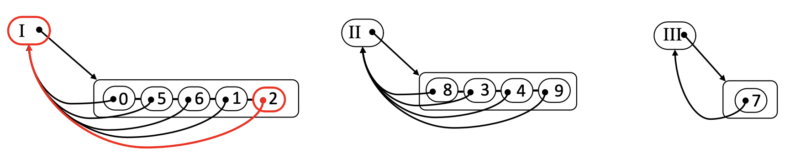
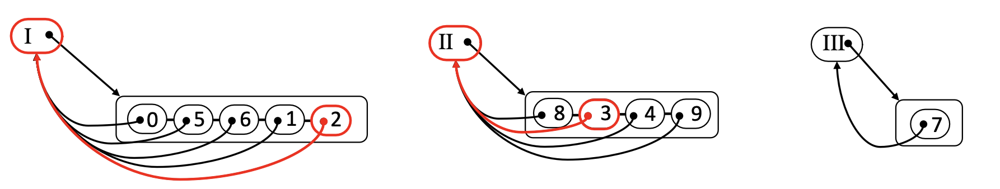
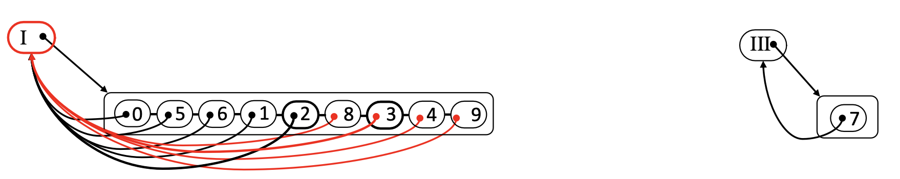
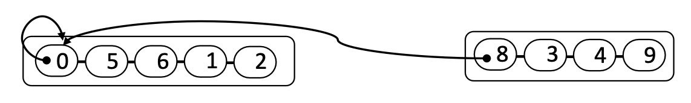
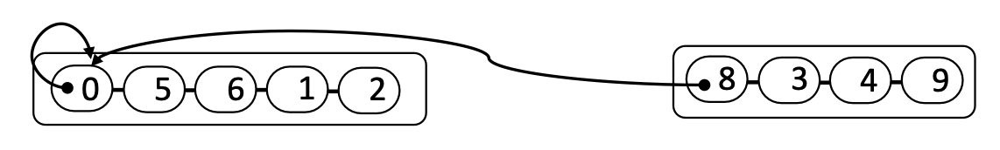
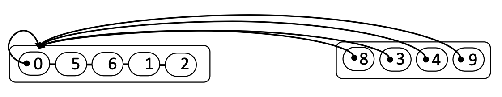
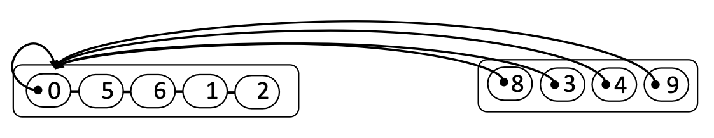

9 Union-Find
Coding
Java
Algorithm
Union-Find
This lecture introduces the Union-Find data structure, which efficiently supports dynamic connectivity operations in graphs.
Introduction
Definition 1 An undirected graph is connected if, for any two vertices, there is a path between them.
- Connected components: maximal connected subgraphs.
- Dynamic Connectivity Problem
- Given a set of \(n\) nodes (vertices), support two operations:
- Find: Tell if two vertices have path(s) to each other. i.e., if they are in the same component.
- Union: if two vertices are in different components, merge them into one component.
- Given a set of \(n\) nodes (vertices), support two operations:
- Applications of dynamic connectivity problem:
- Identify if a pair of “nodes” are connected via a path; if not, we can make them connected.
- The “nodes” can be:
- Computers in a network
- Pixels in a digital image
- Friends in a social network
- Transistors in a computer chip
- Elements in a mathematical set
- Variable names in a Fortran program
- etc.
- If we use graph, there are some challenges to solve the dynamic connectivity problem:
- The time complexity of graph traversal is \(O(m+n)\), which is too slow for large graphs.
- Since the graph is changing, we need to re-traverse it every time.
Union-Find Data Type
- In the union-find data type, we implement the following two operations:
find(p): return the component containing the nodep.union(p, q): merge the components containing nodespandq.
- Goal: design efficient data structure for union-find.
- Number of nodes (vertices) \(n\) can be huge.
- Number of union and find operations \(k\) can be huge.
- Union and find operations may be intermixed. Namely, we want:
- Usually, we first tell if
pandqare from the same component by callingfind(p)andfind(q). - If they are not, we call
union(p, q)to merge their components.
- Usually, we first tell if
- A further note on the data structure is that:
- Each vertex records the identity of the component
- The identity can be used to locate the component
- When performing “union”, update each vertex’s records of their component.
- The simplest structure is to use a sequence (e.g., a list, a map) for each component.
find(p): \(\mathcal{O}(1)\) union(p, q): \(\mathcal{O}(n_\text{small})\), \(n_\text{small}\) is the size of the smaller component.- Step 1: identify two nodes from different components 
- Step 2: merge the two components (move all nodes from the smaller component to the larger one) 
- Amortized time complexity of “union-find”:
- A union-find operation
union-find(p, q):findoperation: Tell ifpandqare from the same component by callingfind(p)andfind(q).unionoperation: If they are not in the same component, we callunion(p, q)to merge their components.
- What is the time complexity for executing
union-findfor \(k\) times?- Time complexity of \(k\)
findoperations: \(\mathcal{O}(k)\). - Time complexity of \(k\)
unionoperations: \(\mathcal{O}(n\log n)\).- \((\text{maximial number of ``moves'' for each vertex})\times(\text{number of vertices})\)
- \((\text{maximial number of ``moves'' for each vertex})=\mathcal{O}(\log n)\): a vertex can only be moved at most \(\log n\) times, as each time a vertex move, its component’s size (at least) doubles until \(n\).
- \((\text{number of vertices})=\mathcal{O}(n)\).
- Hence,
unionis \(\mathcal{O}(n)\) for each operation and \(\mathcal{O}(n\log n)\) for \(k\) operations.
- Hence,
unionis very time-consuming due to many “moves”. Can we avoid many “moves?”
- Time complexity of \(k\)
- A union-find operation
- An alternative data structure to implement union-find: tree structure: a naïve implementation

- We can further simplify the tree structure by using the root to represent the component.
- In this case, we use a self-loop: that is, the root points to itself. 
find(p): will simply be to trace back to the root fromp.
Algorithm find(p): if not yet reached the root: return find(parent of p); else: return parent of p; - At this time, the time complexity of
unionis \(\mathcal{O}(1)\). - However, the time complexity of
findis \(\mathcal{O}(\text{depth})\).
- In this case, we use a self-loop: that is, the root points to itself. 
- To reduce the time complexity of
find, we can reduce the \(\text{depth}\) of the tree.- We will use a technique of path compression. 
find(p): will be to trace back to the root fromp, and let the root to be the parent of all the traversed nodes.
Algorithm find(p): if not yet reached the root: parent of p <- find(parent of p); else: return parent of p; - Now, the time complexity of
findis \(\mathcal{O}(\text{depth}')\), and we know \(\text{depth}'\) is much smaller than \(\text{depth}\).
- We will use a technique of path compression. 
- We can further simplify the tree structure by using the root to represent the component.
- Time complexity of union-find by path compression
We conduct \(k\) series of
union-findoperations in a graph with \(n\) vertices.- Each time find if the current pair of vertices are in the same component.
- If not, then we union them into the same component.
The amortized time complexity of \(k\) series of
union-findoperations: \(\mathcal{O}(k\log^* n)\), where \(\log^*n\)= log-star \(n\), the inverse of the tower-of-twos function.minimum \(n\) \(2\) \(2^2=4\) \(2^{2^2}=16\) \(2^{2^{2^2}}=65,536\) \(2^{2^{2^{2^2}}}=2^65,536\) \(\log^*n\) \(1\) \(2\) \(3\) \(4\) \(5\) - This time complexity function is very slow-growing, and we can consider it as the constant time complexity. That is, \(\mathcal{O}(k\log^* n)\sim\mathcal{O}(1)\).